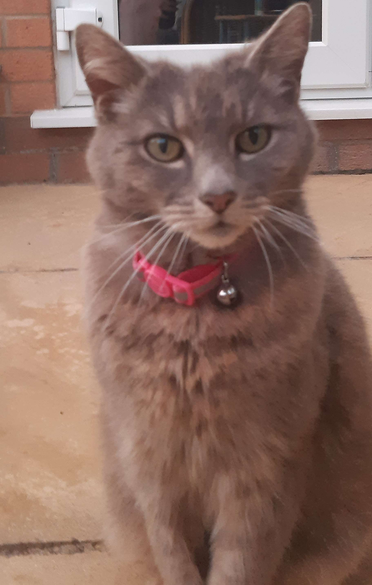

Nice to meet you!
My name is Joe but my friends call me Jow. The nickname came about when someone misspelled my name in a Christmas card when we were kids. I think it has a nicer ring to it so I've incorporated it into my many online pseudonyms.
I make music under two names - an instrumental dark ambient trap project called Sadoma and an initially-ironic-turned-lowkey-genuine cloud rap persona called Jow Rowdy. You can find my music HERE!
I listen to a lot of music as well! You can follow me on Last.fm if you'd like! My top 3 genres are:
- Metal (especially black metal)
- Rap (especially cloud rap)
- Rock (especially grunge and garage rock)
I also play a lot of video games and occasionally make videos with my friends. I have multiple Youtube channels but my main one is this one.
I have 1 pet - a small grey cat which 11 year old me intelligently named Chicken. Everyone else calls her Smokey but I chose the endearing nickname because I thought naming cats after their colour was unoriginal.
I was born in Essex but moved to Norfolk at a very young age and am still there now. I've always been interested in computing and have found coding a fun way to be productive and creative and I hope to build a career somewhere in the coding field some day.
I like cats a lot but my favourite animal is the red panda. I think my least favourite law of all time is not being allowed to own one as a pet. Then probably the law allowing slavery after that.
Work Experience
- Spar - Shop Assistant
- McDonalds - Crew Member
- Mum & Dad's house - Unemployed
Top 10 Artists/Bands
- Bladee
- Yung Lean
- Jesus Loves Junkies
- Bones
- Wavves
- Sybyr
- Urfaust
- Sickboyrari
- Death Grips
- Kings of Leon
This list contains data spanning from December 21st 2018 to June 14th 2023 and is subject to change and totally embarrass me in the years to come.
Fancy a challenge?
To test my current abilities with JavaScript, I have made a short quiz - 5 'yes or no' questions on facts about me for you to simply guess. Please answer all questions with either "yes", "no", "y" or "n". If you manage to get them all right, there will be a 2-question bonus round! Click here to take the quiz!